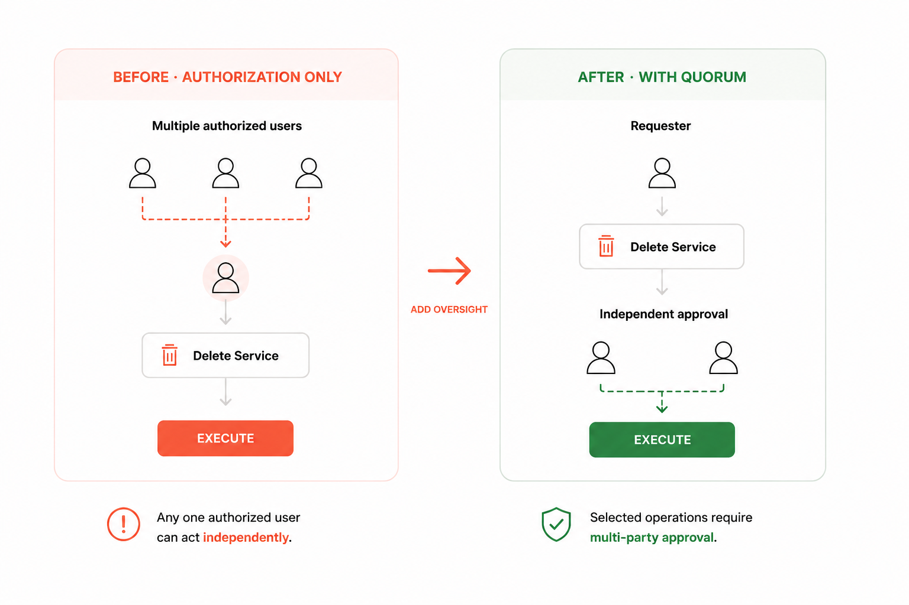
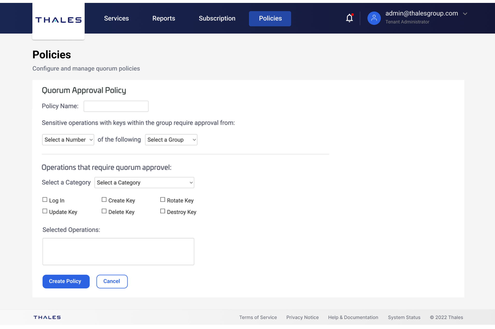
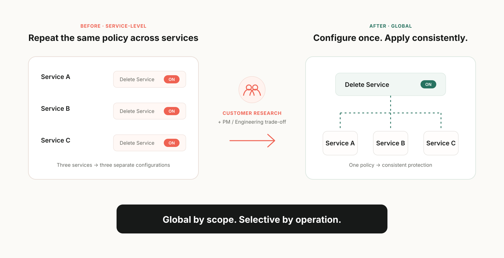

Thales Quorum Approval
Designing a secure and traceable multi-party approval experience for high-risk cryptographic operations
01OVERVIEW
Designing multi-party governance for high-risk cryptographic operations
DPoD is Thales’ cloud platform for deploying and managing enterprise cryptographic services. As security and compliance requirements grew, customers needed stronger governance over high-risk operations.
I led the end-to-end design of Quorum, a 0→1 governance capability spanning policy configuration, request submission, multi-party approval, execution, and audit history. Working closely with Product and Engineering, I helped define the governance model, simplify configuration, and design the cross-role experience from concept through validation and launch.
A global, operation-based governance layer that adds multi-party approval to selected high-risk operations without taking users out of their existing DPoD workflows.
02THE PROBLEM
Authorization alone wasn't enough
DPoD used role-based permissions to control which operations users could access. Depending on their role, multiple authorized users could have permission to perform the same sensitive action.
The risk was that authorization still allowed any one of those users to complete a high-impact operation independently. For actions such as deleting a cryptographic service, customers needed an additional layer of governance before execution.

03CUSTOMER RESEARCH
What customers needed from stronger governance
Early enterprise customer interviews helped us understand what stronger governance needed to accomplish. Across customers, three needs consistently surfaced: prevent a single person from independently completing sensitive actions, keep approval inside DPoD, and maintain a traceable record of every decision.

How might we add independent approval to high-risk operations while keeping the workflow in-context and traceable?
04INITIAL DIRECTION
Our first model prioritized service-level flexibility
Our initial concept applied Quorum at the service level. Administrators selected a cryptographic service, chose which operations required Quorum, and assigned the appropriate approver group.
Different services could have different security needs, so this model allowed each service to use its own governance policy and offered maximum flexibility.

05CUSTOMER RESEARCH & TURNING POINT
Research exposed a trade-off: flexibility vs simplicity
Testing the service-level prototype revealed a clear tension: customers valued the added governance, but questioned the need to repeat similar configuration across individual services.
Product initially favored preserving service-level flexibility, while I was concerned about repeated setup and long-term configuration and maintenance complexity as customers scaled.
Service-level configuration
- Maximum flexibility
- Different services can use different governance policies
- Repetitive setup across services
- Higher configuration and maintenance effort
- Greater engineering complexity
Global operation-based policy
- Simpler to configure and maintain
- More consistent governance across services
- Easier to scale as more operations are added
- Less service-level customization
Using customer feedback and engineering implications, we aligned on a global operation-based model.
We intentionally gave up some service-level customization for a simpler, more consistent model that could scale.

06EXPERIENCE ARCHITECTURE
One governance workflow, three roles
With the global policy model established, the next challenge was designing the workflow across the people involved. We aligned with the CipherTrust team on the core governance model and role responsibilities, then adapted it to DPoD’s workflows—resulting in three distinct roles: Administrator, Requester, and Approver.

07KEY UX DECISIONS
Designing role-specific experiences around one protected operation
I designed each role around the same protected operation while tailoring the interface to what each user needed to configure, understand, and do next.
01 · Administrator
Configure protection once, not service by service
Administrators configure Quorum around selected high-risk operations rather than individual services. Once enabled, the policy applies consistently across services, eliminating repeated setup.
Design decisionCentralize policy configuration
02 · Requester
Turn a risky action into an approval request without losing context
Previously, an authorized requester could confirm a high-risk operation and execute it immediately. With Quorum enabled, the same action becomes a request for approval while keeping the affected service and operation visible.
Design decisionKeep approval in context
03 · Approver
Give approvers the context to decide—and requesters the visibility to follow up
Approvers see the requester, affected service, protected operation, and the controls they need to approve or reject. Requesters see the same request from a progress perspective, including who has responded and who is still pending.
Design decisionMake progress actionable
Why a list view? It supports fast scanning across multiple requests and makes pending actions easier to identify.
08TESTING & ITERATION
Testing refined both policy flexibility and approval visibility
Prototype testing revealed two areas where the experience needed to adapt to real-world governance workflows.
01 · Adaptability
Make policies adaptable as governance needs change
The initial prototype allowed administrators to enable or disable a policy, but not edit its configuration. Internal stakeholder testing showed that governance requirements could change over time.
Rather than forcing administrators to disable and recreate a policy, I added an Edit Policy flow so configurations could evolve over time.
02 · Actionability
“2 of 3 approved” was visible—but not actionable
The early prototype summarized progress as 2 of 3 approvals received. Testing showed that users understood one approval was missing, but still could not tell who needed to act next.
I replaced the aggregate-only status with named approvers and individual states, allowing requesters to identify who was still pending and follow up directly.
Aggregate progress only
Users could see that one approval was missing, but not who was blocking the request.
Named approvers + individual status
Progress became actionable, not just visible.
09IMPACT
A simpler model created a foundation that could scale
The operation-based model gave Quorum a scalable foundation. The initial release supported four protected operations, and the capability later expanded to more than 20 without requiring a different configuration model for every service.
Three months after launch, 92% of surveyed respondents reported being satisfied with Quorum, while 73% of surveyed Quorum users indicated an intention to renew DPoD.
→WHAT I LEARNED
The goal isn't maximum flexibility. It's the right level of flexibility.
Research showed me that more configurability does not automatically create more value. The final model preserved flexibility where users needed it while simplifying the parts that did not need to vary by service.
If I continued the work, I would track approval completion time, request expiration and abandonment, and policy-edit behavior to understand how the workflow performs at scale.